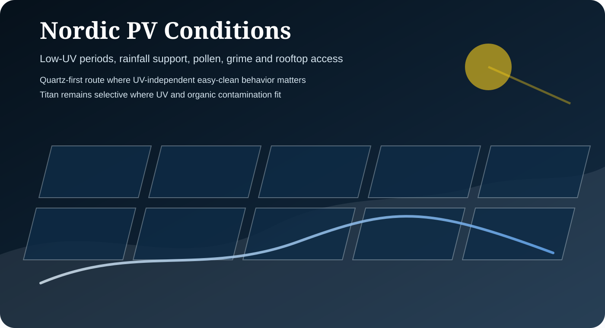

Quartz-first selection
Passive SiO₂ behavior is appropriate where easy-clean logic and seasonal surface recovery are important.
The Nordic market supports local credibility for the .no domain and provides a clear rainfall-assisted, pollen, grime and rooftop-maintenance context. Quartz should be the primary route, with Titan selected only where the site context supports active behavior.

Passive SiO₂ behavior is appropriate where easy-clean logic and seasonal surface recovery are important.
Nordic evaluation should consider seasonal contamination and cleaning access rather than universal yield claims.
Use documentation, contamination profile and current O&M records to select the correct SolarEX pathway.
The Nordic route should start with Quartz for easy-clean and reduced-adhesion logic.
Titan requires a specific contamination review and should be used where site conditions support the active TiO₂ pathway.